Announcements
Exam 1 is on February 25th (Wednesday) in ELTT 116 at 6:30 pm.
The following items are posted on Brightspace: instructions, seating chart, study guide, and office hours for Exam 1.
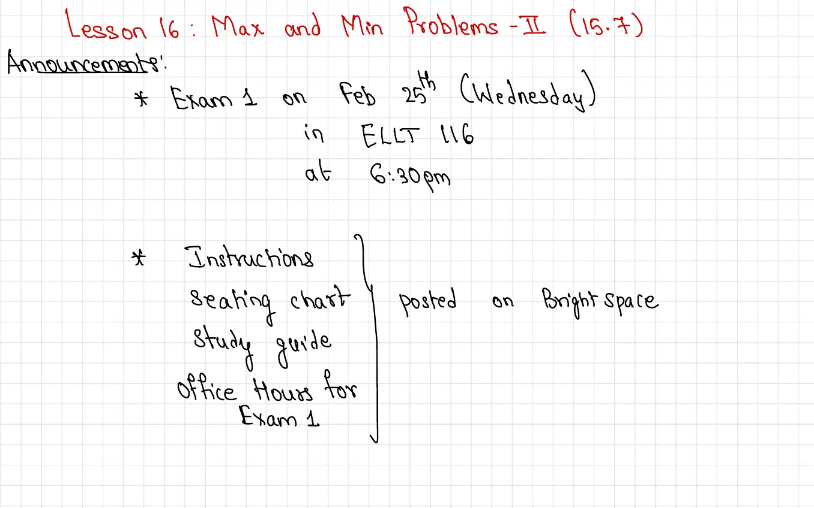
Exam 1 is on February 25th (Wednesday) in ELTT 116 at 6:30 pm.
The following items are posted on Brightspace: instructions, seating chart, study guide, and office hours for Exam 1.
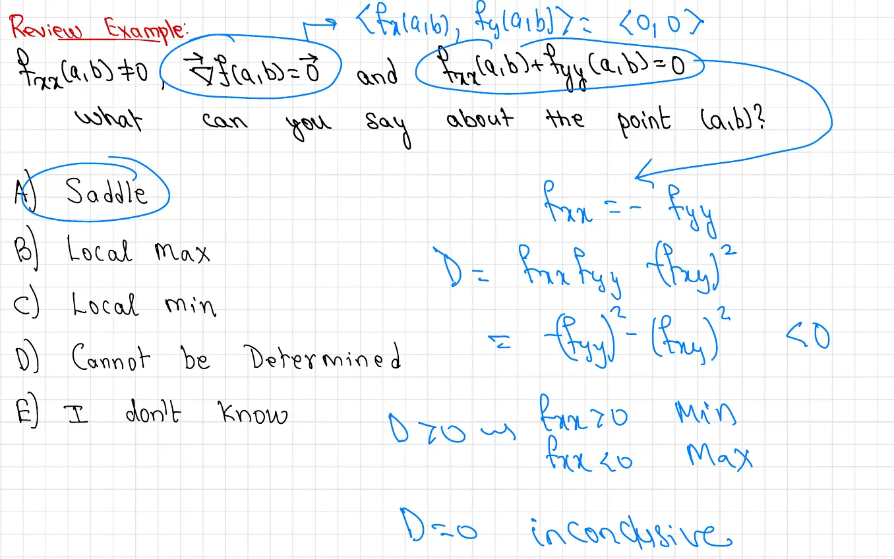
Suppose \(f_{xx}(a,b) \neq 0\), \(\nabla f(a,b) = \vec{0}\) (so \((a,b)\) is a critical point), and \(f_{xx}(a,b) + f_{yy}(a,b) = 0\). What can you say about the point \((a,b)\)?
Options: A) Saddle B) Local Max C) Local Min D) Cannot be Determined E) I don't know
Answer: A) Saddle.
The condition \(f_{xx} + f_{yy} = 0\) means \(f_{xx} = -f_{yy}\). Substituting into the discriminant:
\[D = f_{xx}f_{yy} - (f_{xy})^2 = -(f_{yy})^2 - (f_{xy})^2 \leq 0\]Since \(f_{xx} \neq 0\), we have \(f_{yy} \neq 0\), so \(D = -(f_{yy})^2 - (f_{xy})^2 < 0\). Therefore \((a,b)\) is a saddle point.
Reminder — Second Derivative Test summary:
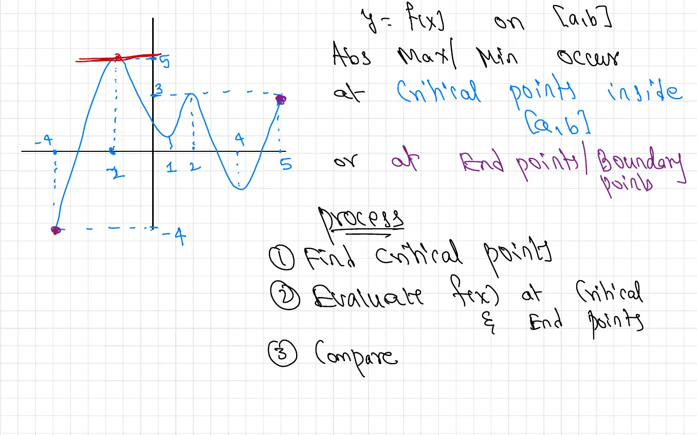
Graph description: A continuous curve on the interval \([-4, 5]\) showing multiple local extrema. The graph rises steeply from a minimum near \((-4, -4)\) to a local maximum near \((-2, 5)\), then oscillates through additional local extrema. Two highlighted points (shown as filled dots) appear at the global minimum around \((-4, -4)\) and a boundary point near \((5, 2.5)\). A horizontal dashed red line at \(y = 5\) marks the global maximum level.
The absolute maximum and minimum of \(f(x)\) on a closed interval \([a,b]\) occur either at critical points inside \((a,b)\) or at the endpoints/boundary points.
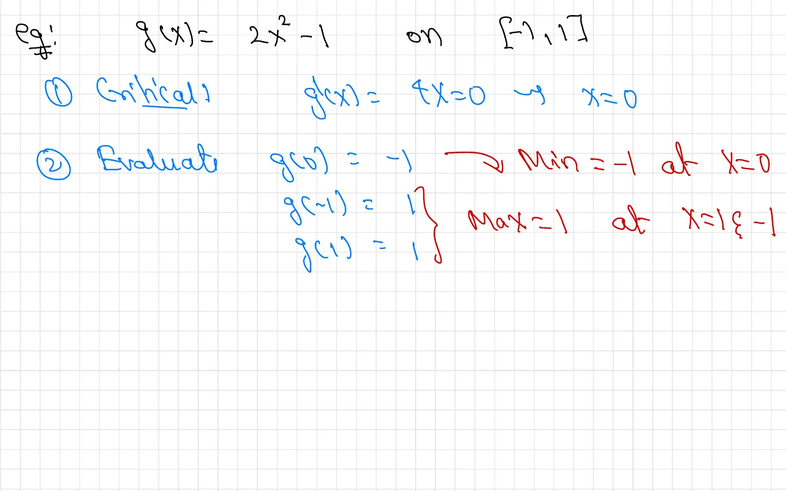
Step 1 — Critical points: \(g'(x) = 4x = 0 \implies x = 0\).
Step 2 — Evaluate:
Step 3 — Compare:
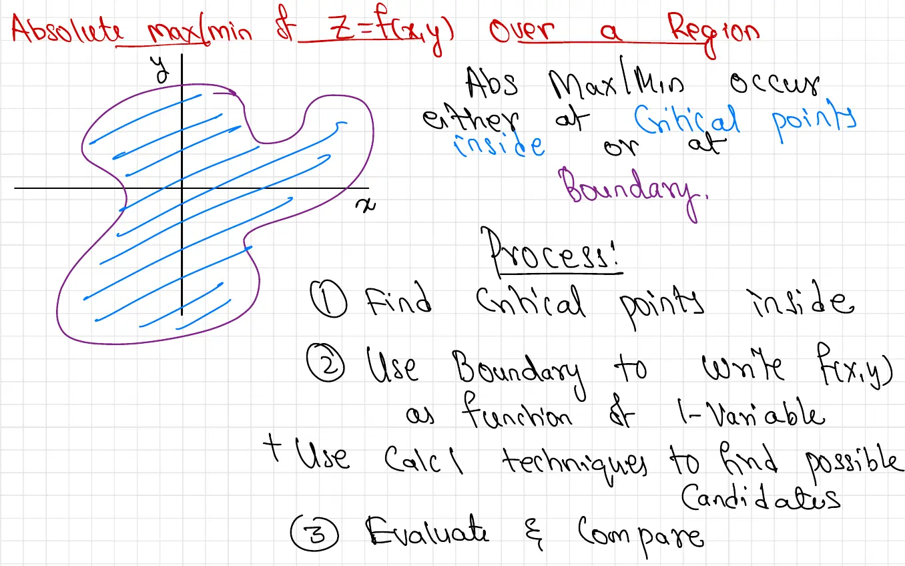
Diagram description: A closed, bounded region in the \(xy\)-plane drawn as an irregular blob shape (similar to an amoeba or figure-eight). The interior is filled with blue diagonal lines (hatching) indicating the region, and the boundary is drawn as a purple curve. This represents a generic closed bounded region \(D\) over which we seek the absolute maximum and minimum of \(f\).
For a continuous function \(f(x,y)\) on a closed bounded region, the absolute maximum and minimum occur either at critical points inside the region or on the boundary of the region.
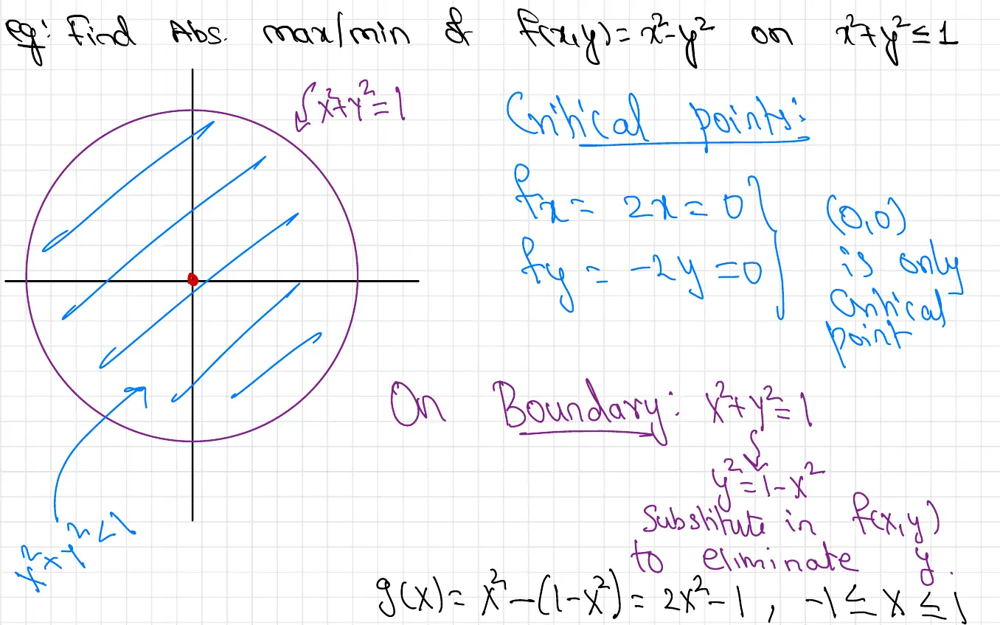
Diagram description: A unit circle \(x^2 + y^2 = 1\) drawn in purple, with the interior region \(x^2 + y^2 \leq 1\) filled with blue diagonal hatching. A red dot marks the origin \((0,0)\) as the only interior critical point. The labels indicate the boundary circle and the closed disk region.
\(f_x = 2x = 0\) and \(f_y = -2y = 0\), so \((0,0)\) is the only critical point.
On the boundary, \(y^2 = 1 - x^2\). Substitute into \(f\) to eliminate \(y\):
\[g(x) = x^2 - (1 - x^2) = 2x^2 - 1, \quad -1 \leq x \leq 1\]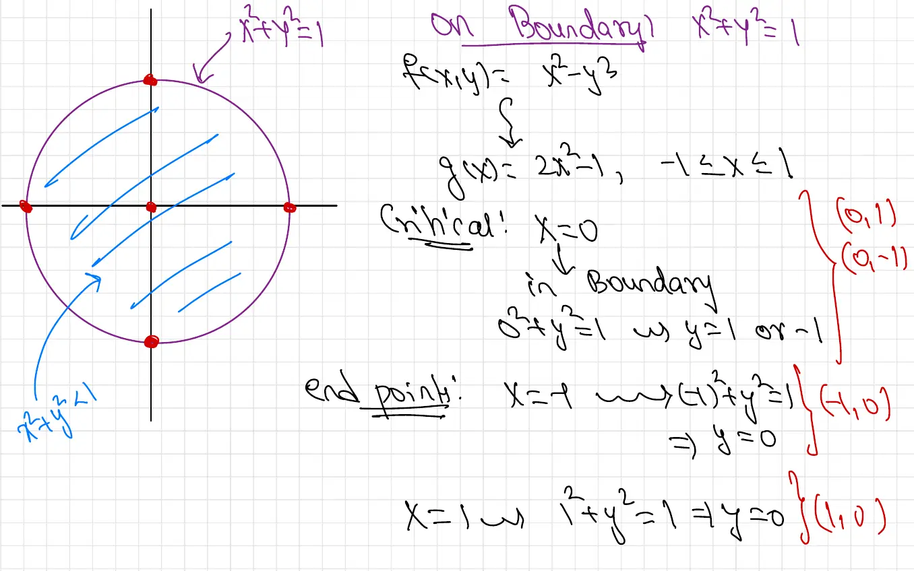
Diagram description: The unit circle with four red dots highlighted at the cardinal points: top \((0,1)\), bottom \((0,-1)\), left \((-1,0)\), and right \((1,0)\). These are the boundary candidate points identified from the analysis of \(g(x)\).
Critical point of \(g\): \(g'(x) = 4x = 0 \implies x = 0\). Substituting \(x = 0\) into the boundary equation \(x^2 + y^2 = 1\) gives \(y = \pm 1\), yielding boundary points \((0, 1)\) and \((0, -1)\).
Endpoints of \(g\):
The four boundary candidate points are \((0,1)\), \((0,-1)\), \((-1,0)\), and \((1,0)\).
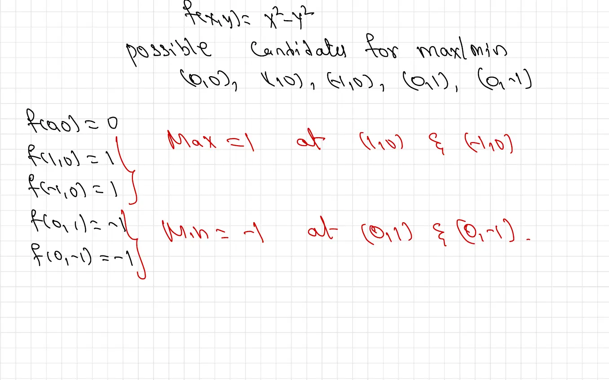
All possible candidates for the absolute max/min: \((0,0)\), \((1,0)\), \((-1,0)\), \((0,1)\), \((0,-1)\).
| Point | \(f(x,y) = x^2 - y^2\) |
|---|---|
| \((0,0)\) | \(0\) |
| \((1,0)\) | \(1\) |
| \((-1,0)\) | \(1\) |
| \((0,1)\) | \(-1\) |
| \((0,-1)\) | \(-1\) |
Absolute maximum \(= 1\) at \((1,0)\) and \((-1,0)\).
Absolute minimum \(= -1\) at \((0,1)\) and \((0,-1)\).
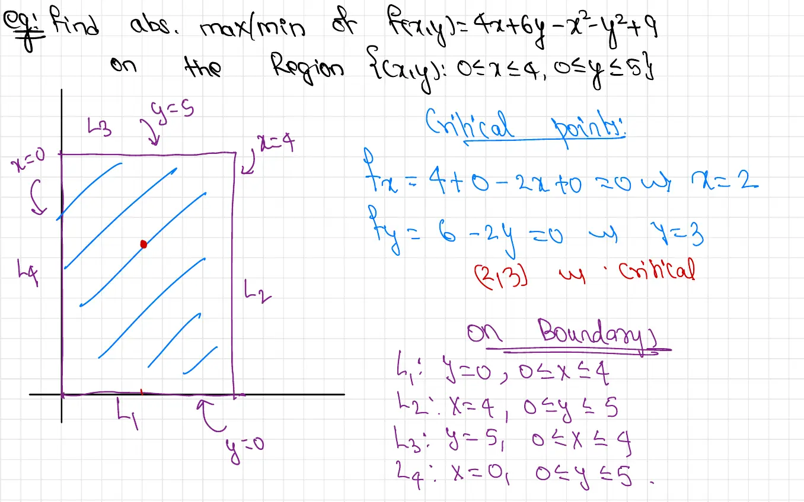
Diagram description: A rectangle in the \(xy\)-plane with corners at \((0,0)\), \((4,0)\), \((4,5)\), and \((0,5)\) drawn in purple. The interior is filled with blue hatching. A red dot at the interior critical point \((2,3)\) is visible. The four boundary segments are labeled: \(L_1\) (bottom, \(y=0\)), \(L_2\) (right, \(x=4\)), \(L_3\) (top, \(y=5\)), and \(L_4\) (left, \(x=0\)).
\(f_x = 4 - 2x = 0 \implies x = 2\)
\(f_y = 6 - 2y = 0 \implies y = 3\)
Critical point: \((2, 3)\) — this lies inside the rectangle since \(0 < 2 < 4\) and \(0 < 3 < 5\). ✓
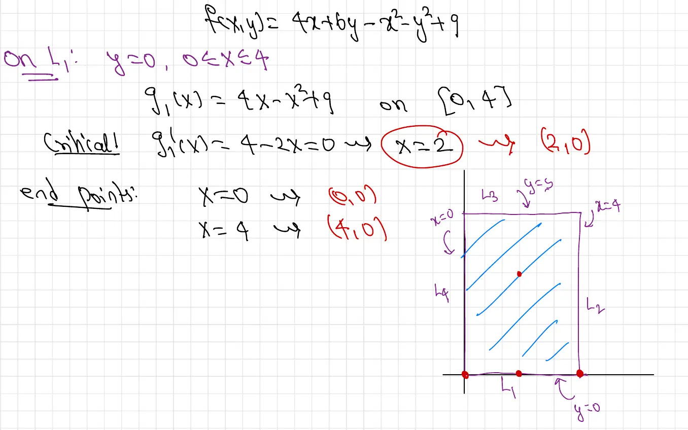
Substituting \(y = 0\) into \(f\):
\[g_1(x) = 4x - x^2 + 9, \quad 0 \leq x \leq 4\]Critical point: \(g_1'(x) = 4 - 2x = 0 \implies x = 2\). This gives candidate point \((2, 0)\).
Endpoints:
Diagram description: The rectangle with boundary segments labeled \(L_1\) through \(L_4\). Three red dots are visible along the bottom edge (\(L_1\)) at \(x = 0\), \(x = 2\), and \(x = 4\), corresponding to the two endpoints and the critical point found along this segment.
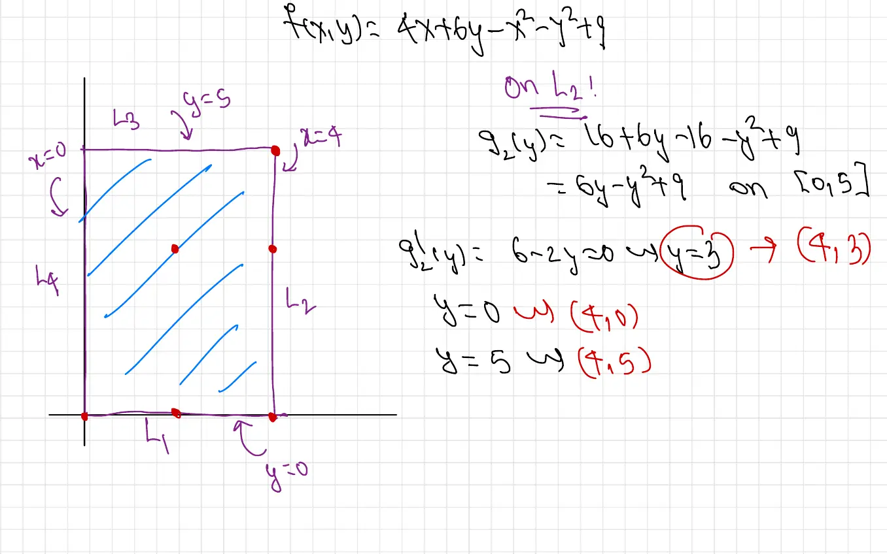
Substituting \(x = 4\) into \(f\):
\[g_2(y) = 16 + 6y - 16 - y^2 + 9 = 6y - y^2 + 9, \quad 0 \leq y \leq 5\]Critical point: \(g_2'(y) = 6 - 2y = 0 \implies y = 3\). Candidate: \((4, 3)\).
Endpoints:
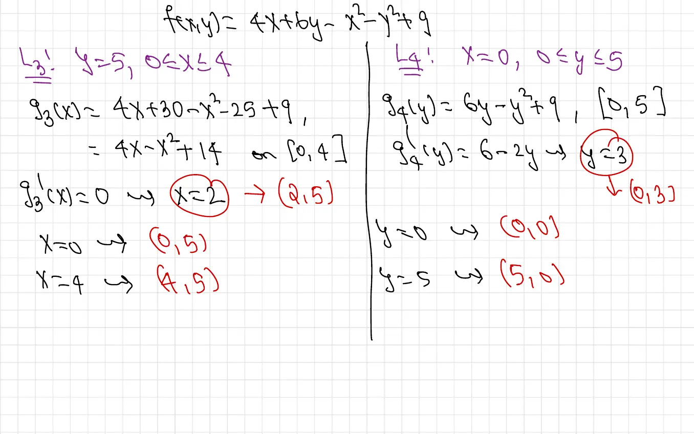
Substituting \(y = 5\):
\[g_3(x) = 4x + 30 - x^2 - 25 + 9 = 4x - x^2 + 14, \quad 0 \leq x \leq 4\]Critical point: \(g_3'(x) = 4 - 2x = 0 \implies x = 2\). Candidate: \((2, 5)\).
Endpoints: \(x = 0 \implies (0,5)\); \(x = 4 \implies (4,5)\).
Substituting \(x = 0\):
\[g_4(y) = 6y - y^2 + 9, \quad 0 \leq y \leq 5\]Critical point: \(g_4'(y) = 6 - 2y = 0 \implies y = 3\). Candidate: \((0, 3)\).
Endpoints: \(y = 0 \implies (0,0)\); \(y = 5 \implies (0,5)\).
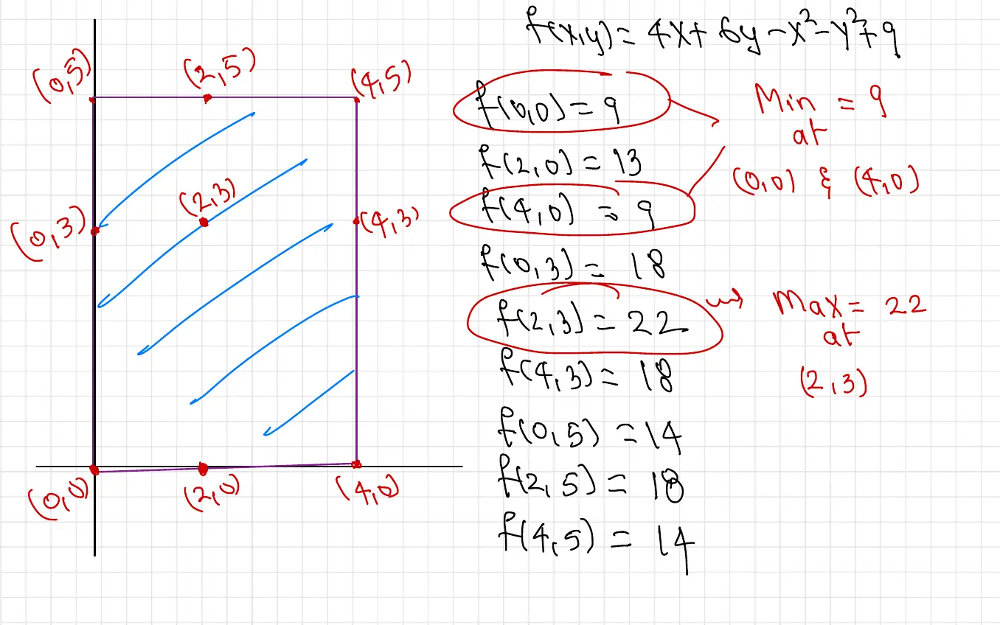
Diagram description: The rectangle showing all candidate points plotted as labeled red dots: interior point \((2,3)\), boundary points \((2,0)\), \((4,3)\), \((2,5)\), \((0,3)\), and corner points \((0,0)\), \((4,0)\), \((0,5)\), \((4,5)\).
| Point | \(f(x,y)\) |
|---|---|
| \((0,0)\) | \(9\) |
| \((2,0)\) | \(13\) |
| \((4,0)\) | \(9\) |
| \((0,3)\) | \(18\) |
| \((2,3)\) | \(22\) |
| \((4,3)\) | \(18\) |
| \((0,5)\) | \(14\) |
| \((2,5)\) | \(18\) |
| \((4,5)\) | \(14\) |
Absolute minimum \(= 9\) at \((0,0)\) and \((4,0)\).
Absolute maximum \(= 22\) at \((2,3)\).
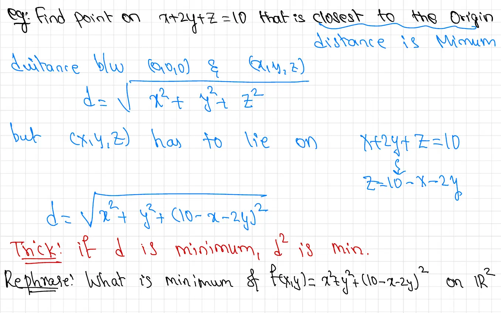
Find the point on the plane \(x + 2y + z = 10\) that is closest to the origin.
The distance from the origin \((0,0,0)\) to a point \((x,y,z)\) is
\[d = \sqrt{x^2 + y^2 + z^2}\]Since \((x,y,z)\) must lie on the plane \(x + 2y + z = 10\), we can express \(z = 10 - x - 2y\) and substitute:
\[d = \sqrt{x^2 + y^2 + (10-x-2y)^2}\]Key trick: Minimizing \(d\) is equivalent to minimizing \(d^2\) (since the square root is increasing). This avoids the square root in our calculus computations.
Rephrase: Find the minimum of \(f(x,y) = x^2 + y^2 + (10-x-2y)^2\) on \(\mathbb{R}^2\).
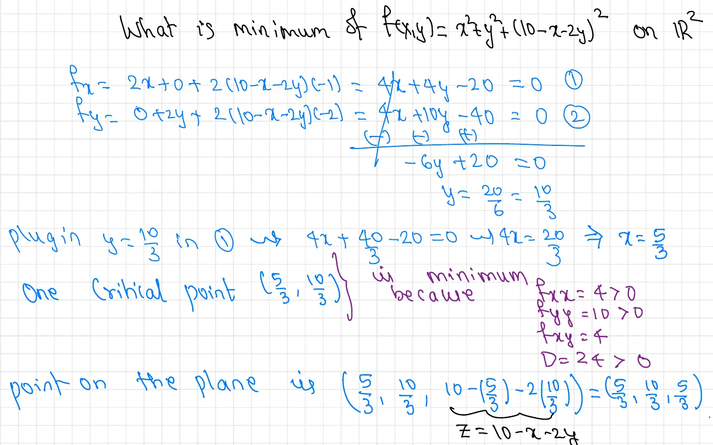
Setting partial derivatives to zero:
\[f_x = 2x + 2(10-x-2y)(-1) = 4x + 4y - 20 = 0 \tag{1}\] \[f_y = 2y + 2(10-x-2y)(-2) = 4x + 10y - 40 = 0 \tag{2}\]Subtract (1) from (2): \(6y - 20 = 0 \implies y = \dfrac{20}{6} = \dfrac{10}{3}\).
Substitute \(y = \tfrac{10}{3}\) into (1): \(4x + \tfrac{40}{3} - 20 = 0 \implies 4x = \tfrac{20}{3} \implies x = \dfrac{5}{3}\).
One critical point: \(\left(\dfrac{5}{3},\, \dfrac{10}{3}\right)\).
Verification that this is a minimum:
Since \(D > 0\) and \(f_{xx} > 0\), the critical point is a local (and global) minimum.
Finding \(z\):
\[z = 10 - x - 2y = 10 - \frac{5}{3} - \frac{20}{3} = 10 - \frac{25}{3} = \frac{5}{3}\]The point on the plane closest to the origin is
\[\left(\frac{5}{3},\; \frac{10}{3},\; \frac{5}{3}\right)\]